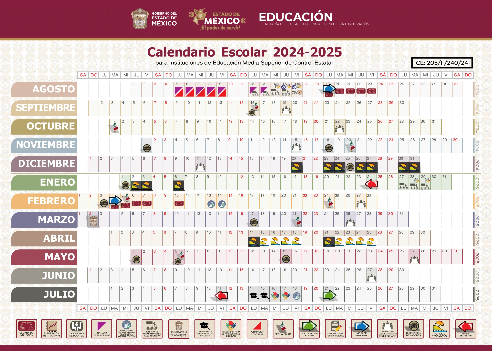

Ofertar un servicio educativo de calidad, acorde a los cambios sociales y tecnológicos, que exige la nueva sociedad del conocimiento, con un sentido humanista basado en el fomento y práctica de valores y desarrollo de habilidades socioemocionales en los estudiantes.
Consolidarnos como una institución educativa, con una formación integral en los estudiantes, proporcionando las herramientas necesarias para resolver los desafíos a los que habrán de enfrentarse; al continuar con su educación superior o incorporarse al campo laboral, y sepan enfrentarse a la condiciones económicas, políticas y sociales de nuestro país, considerando su idiosincrasia y capacidades que definen su personalidad favoreciendo la cultura del esfuerzo y la autonomía, basados en los pilares de la educación, aprender a conocer, aprender a hacer, aprender a ser y aprender a convivir.
El plan de estudios de bachillerato general es la estructura curricular que organiza las materias, créditos académicos, horas prácticas y actividades paraescolares que un estudiante debe cursar para concluir el nivel medio superior. 8 Módulos de Formación para el Trabajo: Estos módulos complementan la formación con habilidades prácticas y conocimientos técnicos. 180 horas de carga curricular: Esta carga se distribuye en los seis semestres que conforman el bachillerato. 20 horas de actividades paraescolares obligatorias: Estas actividades complementan la formación académica y promueven el desarrollo de habilidades y valores.
El plan de estudios de Bachillerato General en Edomex se compone de:
El Calendario Escolar para Educación Media Superior es el documento oficial que establece las fechas clave del ciclo escolar para las instituciones educativas de este nivel en la entidad. Este calendario es emitido por la Secretaría de Educación, Ciencia, Tecnología e Innovación del Estado de México (SECTEI).
